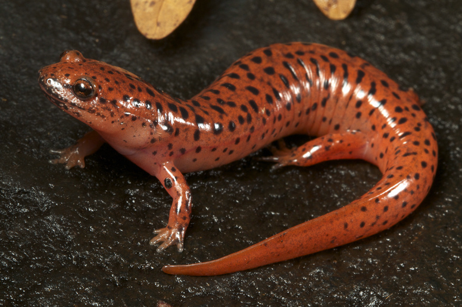

<!-- https://www.chestysoft.com/imagefile/javascript/get-coordinates.asp
 -->
<!DOCTYPE html>
<html>
<body>



<script>

function FindPosition(oElement){
    if(typeof( oElement.offsetParent ) != "undefined"){
        for(var posX = 0, posY = 0; oElement; oElement = oElement.offsetParent){
            posX += oElement.offsetLeft;
            posY += oElement.offsetTop;
        }
        return [ posX, posY ];
    }
    else{
        return [ oElement.x, oElement.y ];
    }
}

function GetCoordinates(e){

    var PosX = 0;
    var PosY = 0;
    var ImgPos;
    ImgPos = FindPosition(myImg);
    if (!e) var e = window.event;
    if (e.pageX || e.pageY){
        PosX = e.pageX;
        PosY = e.pageY;
    }
    else if (e.clientX || e.clientY){
        PosX = e.clientX + document.body.scrollLeft
            + document.documentElement.scrollLeft;
        PosY = e.clientY + document.body.scrollTop
            + document.documentElement.scrollTop;
    }
    PosX = PosX - ImgPos[0];
    PosY = PosY - ImgPos[1];
    
    document.getElementById("x").innerHTML = PosX;
    document.getElementById("y").innerHTML = PosY;
}

var myImg = document.getElementById("sal1");
myImg.onmousedown = GetCoordinates;
</script>


<p>X:<span id="x"></span></p>
<p>Y:<span id="y"></span></p>

</body>
</html>
